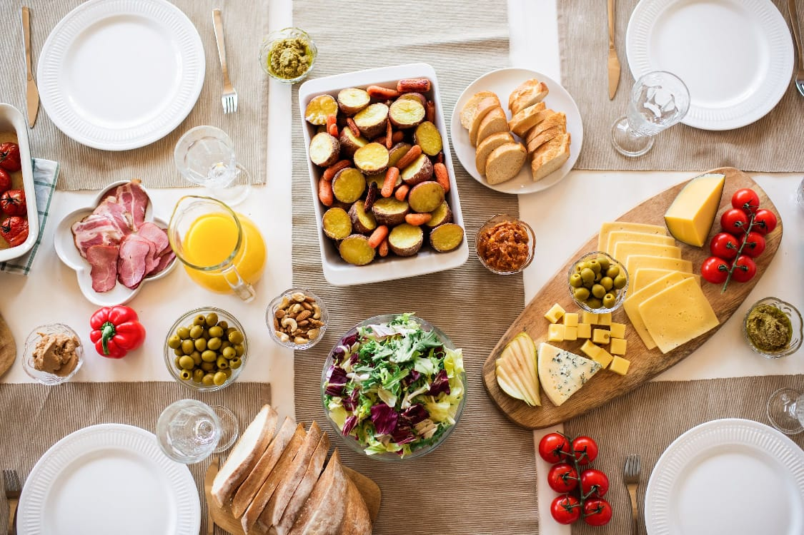
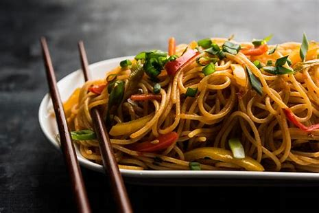

YUMMY
FOODS
Welocome to Yummy Foods
It is delicious, flavorsome, full of flavor, appetizing, scrumptious, probably fresh and juicy, making a succulent meal, a kid would say finger licking good. Apply to food and dishes full of bite, piquancy, zing, zest and relish.
|
|

|

|
Awesome Taste |
Awesome Ingredients |
Taste Noodles |
"This dish looks absolutely delicious, and the flavors are so well-balanced. I love how tender the meat is, and the seasoning is perfect".
Burger Collection
Succulent, juicy, and bursting with freshness, our burgers are a harmonious blend of the finest ingredients. a soft, toasted brioche bun, perfectly complementing the tender, flame-grilled patty. With each bite, savory juices intermingle, creating an explosion of taste that dances on your palate.
|
|

|

|

|
| Burger one |
Burger two |
Burger three |
Burger four |
This tasty burger isn't just about satisfying hunger; it's an experience, a celebration of culinary craftsmanship that promises pure satisfaction in every mouthful.
Fire and Ice with our Fries
Dive into these golden rods of joy, perfectly cooked to a mouthwatering crispness that promises satisfaction with every munch. Their irresistible aroma teases the senses, beckoning you to experience the epitome of fry perfection

|
 |
 |
|
| Fires One |
Fires Two |
Fires Three |
Fires Four |
Served hot and crispy, these golden delights bring the thrill of heat balanced perfectly with a touch of chill. Indulge in the savoriness of each fry, a harmonious blend of sensations that'll keep you craving for more..
Eat Healthy and Stay Healthy
Maintaining good health is intrinsically linked to the food choices we make. Eating healthy isn't just a recommendation; it's a lifestyle that significantly impacts overall well-being. Opting for nutritious foods rich in vitamins, minerals, and essential nutrients is crucial for vitality and longevity.

|

|

|

|
| Healthy One |
Healthy Two |
HealthyThree/td>
| Healthy Four |
A balanced diet consisting of fruits, vegetables, lean proteins, whole grains, and healthy fats forms the foundation of good health. It boosts the immune system, supports bodily functions, and reduces the risk of chronic diseases such as heart conditions, diabetes, and obesity
Do Google and Eat Noodles
In a world where culinary delights tantalize our taste buds and offer a mosaic of flavors, few dishes stand as an epitome of satisfaction like noodles. Nestled within this menu lies a culinary masterpiece that has traversed continents, captivating palates and hearts worldwide - the mesmerizing allure of our signature noodles.
Tasty noodles are a popular dish enjoyed globally for their delicious and versatile nature. Made from unleavened dough that's stretched, extruded, or rolled, noodles come in various shapes, sizes, and textures. They are a staple in many cultures, with each region having its unique variations.
Enjoy the Deserts
Delicious desserts are the delightful and indulgent sweet treats enjoyed at the end of a meal or as a standalone pleasure. They come in various forms, from cakes, pies, and pastries to ice creams, puddings, and fruit-based delights, each offering a unique blend of flavors, textures, and aromas.
|

|

|
|
| Desert One |
Desert Two |
Desert Three |
Desert Four |
Beyond their delightful taste, desserts often evoke nostalgia, creating cherished memories associated with family gatherings, holidays, and special moments. They continue to evolve with new trends, incorporating healthier ingredients, alternative sweeteners, and innovative techniques to cater to changing dietary preferences and lifestyles.